文化體驗傳送門
在地專業台語發音
收錄傳統陣頭兵器與陣法台語術語（標註教育部台羅拼音），支援現場語音朗讀與語音測試。
經典陣法數位圖鑑
收錄八卦陣、蜈蚣陣、開斧等經典陣頭陣形圖解與詳細說明。
互動聽力與文史測驗
藉由趣味問答驗收學習成果，聽語音選兵器，深入了解傳統陣頭文化底蘊。
摃對
傳統陣頭雙人兵器對打套路與招式解析。
常見對打組合
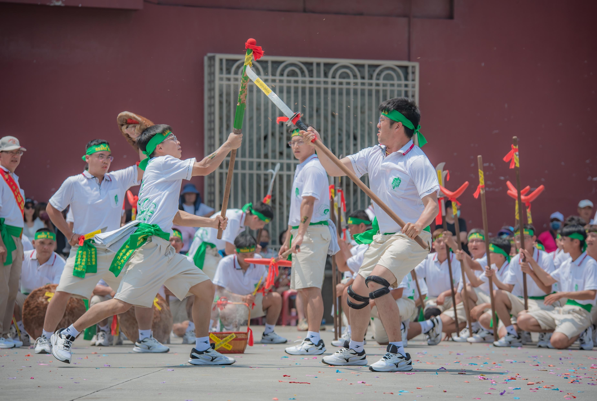
1. 單刀 / 雨傘
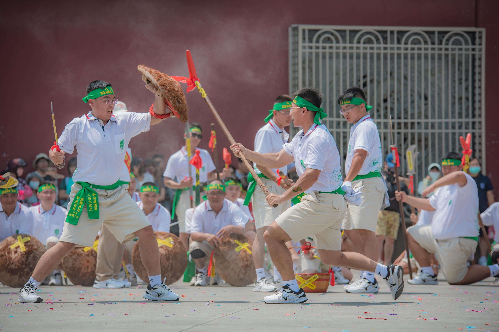
2. 耙 / 牌刀
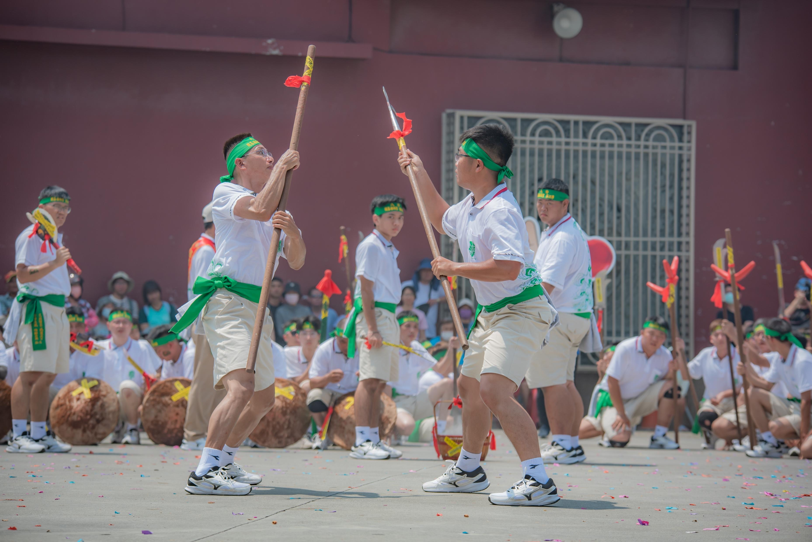
3. 鉤仔 / 棍仔

4. 鐽刀 / 雙鞭
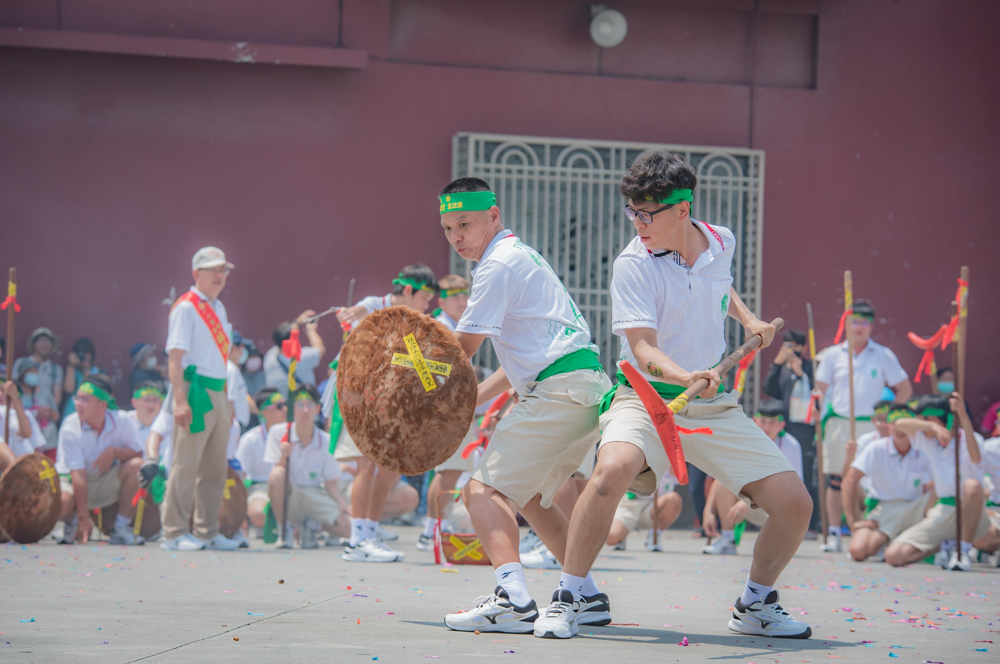
5. 耙 / 牌刀

6. 棍仔 / 牌刀

7. 耙 / 牌刀
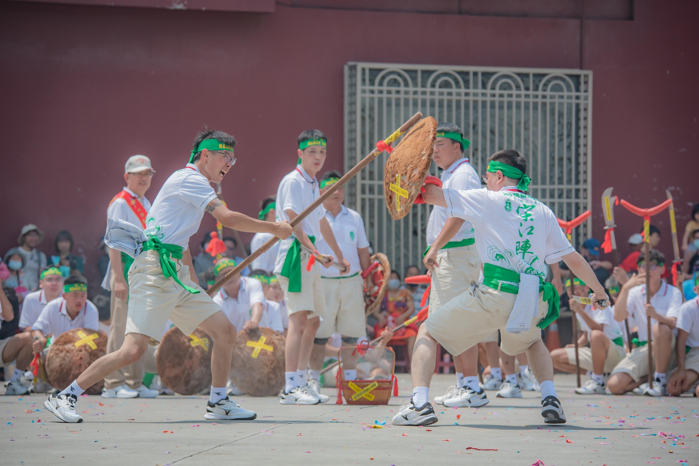
8. 耙 / 牌刀
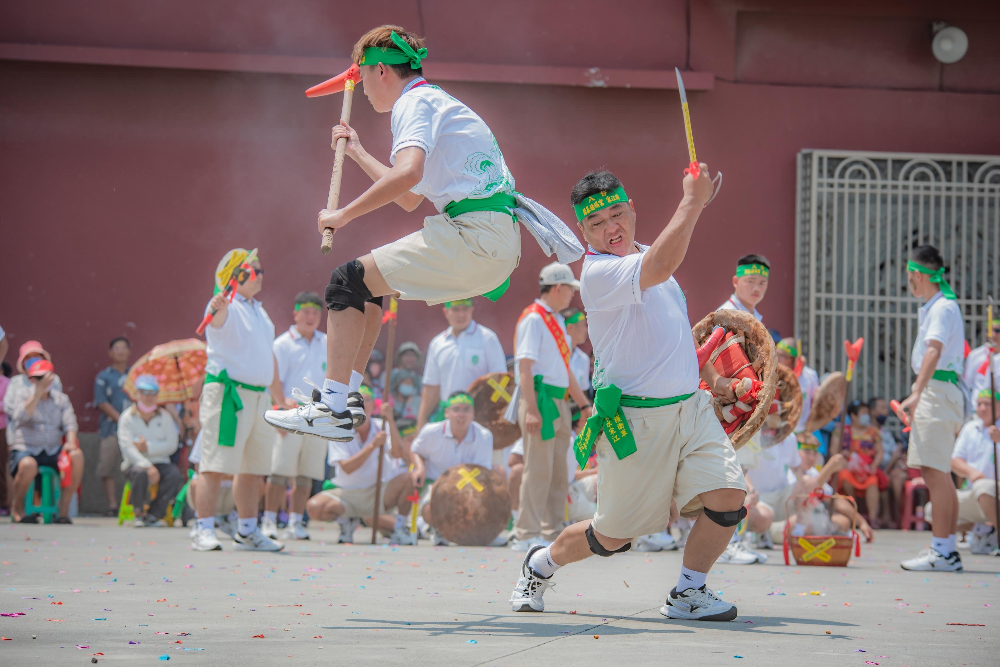
9. 耙 / 牌刀
10. 鐽刀 / 雙鐧
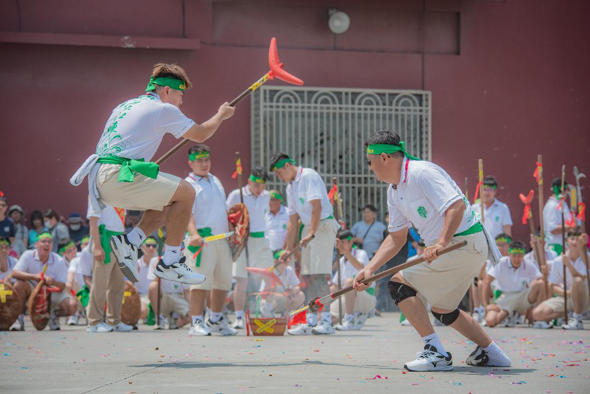
11. 耙 / 鐽刀
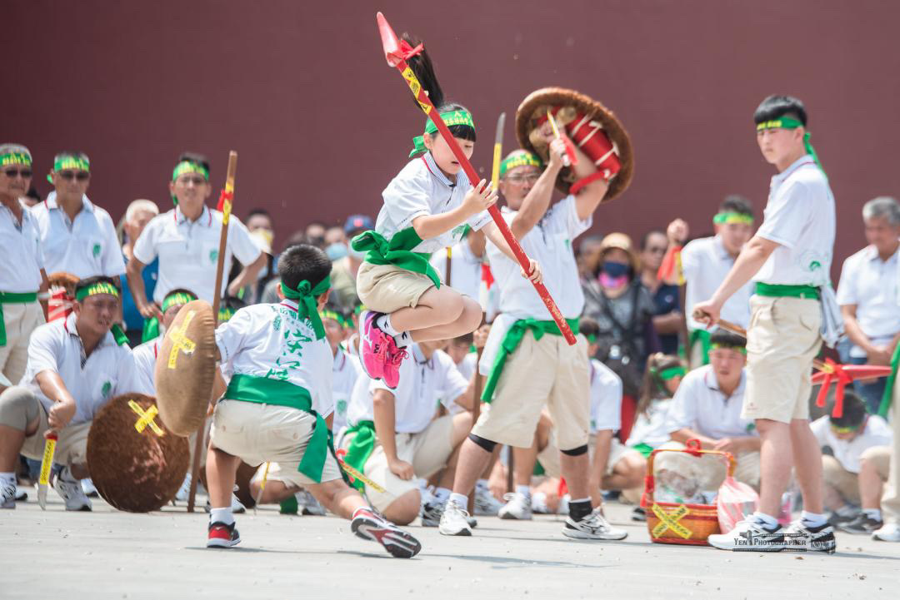
12. 耙 / 牌刀
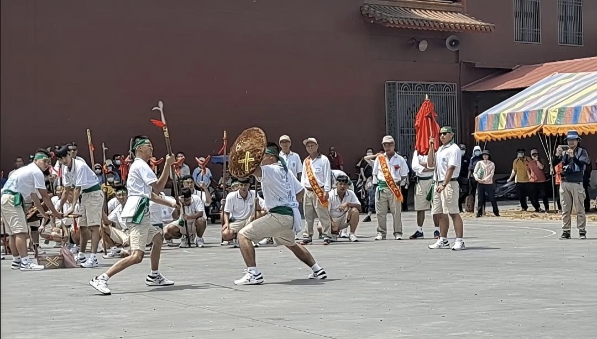
13. 鉤鐮槍 / 牌刀
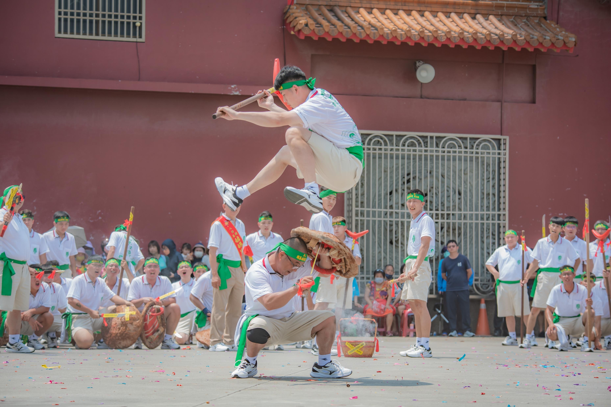
14. 棍仔 / 棍仔

15. 鐽刀 / 雙刀
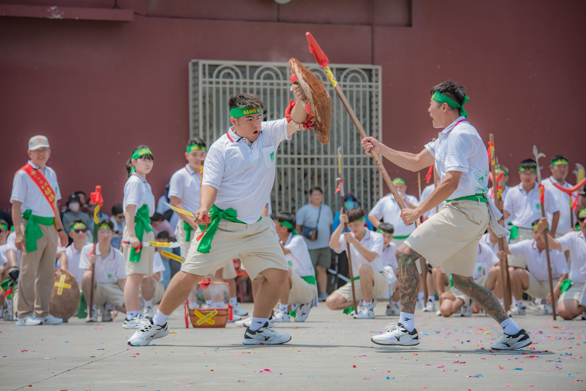
16. 耙 / 牌刀
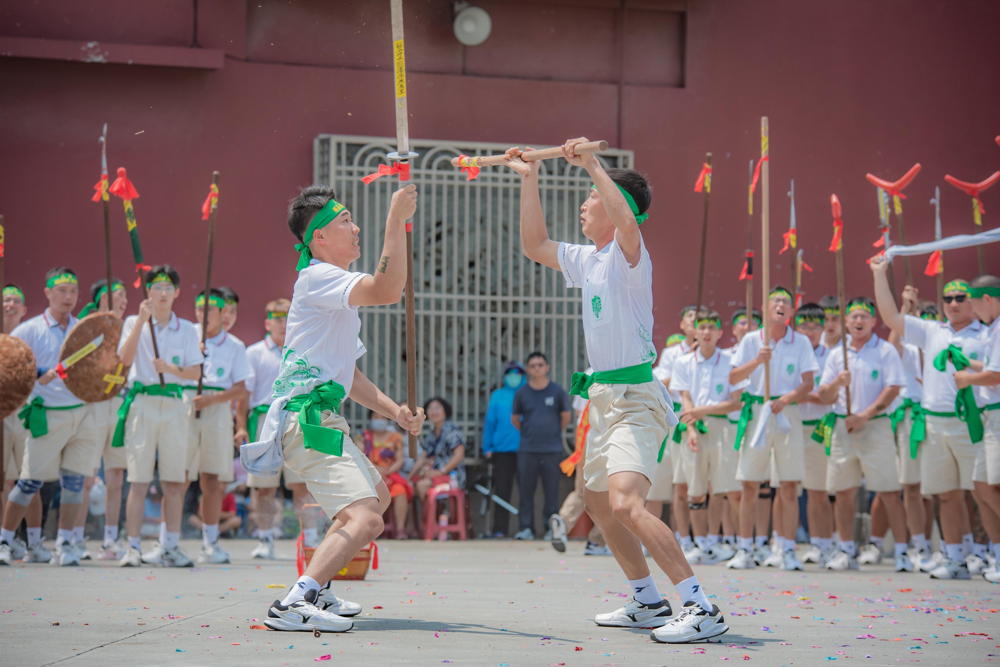
17. 耙 / 牌刀 (翻山*)
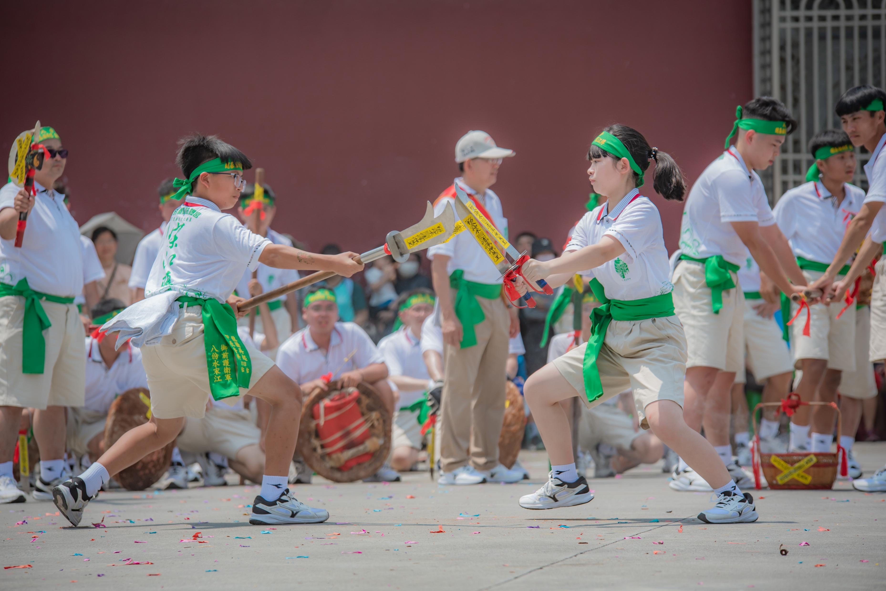
18. 棍仔 / 單刀
問題 1 / 5
🔊
點擊上方喇叭聆聽台語發音，選出正確的名稱：
請問這是哪一項兵器？
走入廟埕，聽見真實聲景
西港刈香（西港慶安宮刈香大典）被譽為「台灣第一香」。宋江陣不僅是民俗藝陣，更是早期村落自我防衛的武力組織。
本數位圖鑑團隊實地走訪西港周邊陣館與慶安宮，採集老一輩師傅的口述記憶與專業動作台語術語，期望透過數位化讓傳統母語與陣頭文化得以永續傳承。
西港刈香陣館地圖
📍 快速定位熱點陣館：